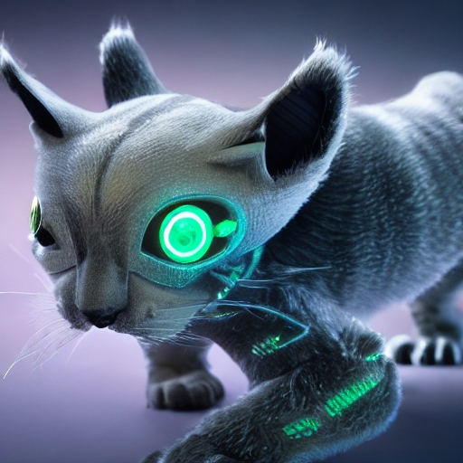

Fauna

Description: The Nova Prowler is a sleek, feline-like mammal with a fur coat that shimmers with metallic hues under sunlight. It has sharp claws and keen senses, making it an agile predator. Nova Prowlers are solitary hunters, stalking their prey with stealth and precision. They are most active during the twilight hours, using their excellent night vision to navigate the dense forests and grasslands. They prefer to inhabit the wooded areas and grassy plains of Terra Nova, where they hunt small prey and seek refuge in rocky crevices or tree hollows. They are carnivorous, preying on small mammals, reptiles, and birds. Adult Nova Prowlers have few natural predators, though they may occasionally compete with other predators for territory and resources. They typically live for 15-20 standard Terran years.
Planet: Terra Nova